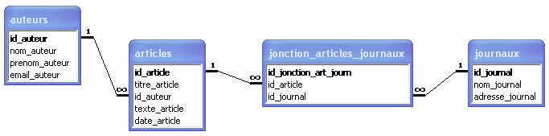
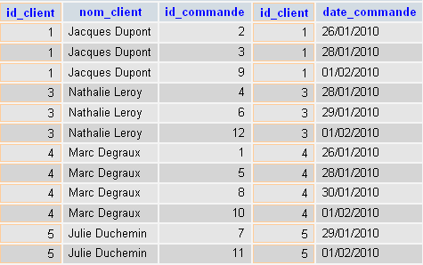
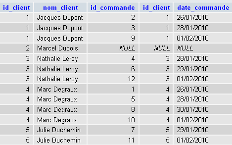

Ce tutoriel a pour but de vous faire découvrir les jointures en SQL. Pour le comprendre, il est nécessaire d'avoir lu la partie Les bases de données du tutoriel officiel de PHP/MySQL.
Avant d'utiliser les jointures, il faut que votre base de données relationnelle soit correctement conçue. Vous apprendrez dans cette partie quelques règles de base (loin d'être exhaustives) dans la conception des bases de données.
Pour ce faire, utilisons un exemple.
Citation
Vous êtes informaticien dans une agence de presse et vous devez stocker les articles des journalistes de l'agence dans une base de données relationnelle. Vous devez stocker pour chaque article son titre, son contenu et sa date, ainsi que le nom, le prénom et l'adresse e-mail de l'auteur. Plusieurs journaux achètent des articles à l'agence de presse en question. Celle-ci voudrait savoir quels journaux ont acheté quels articles. L'agence désire par ailleurs connaître, en plus de leur nom, l'adresse des journaux.
Ces règles n'étant pas faciles à comprendre de prime abord, appliquons-les à notre exemple.
On aurait a priori tendance à créer une table "articles" ayant la structure suivante (notez l'absence de caractères spéciaux, d'espaces et d'accents dans les noms des champs) :
On remarque cependant qu’il y a répétition des informations sur l'auteur. En effet, un auteur peut avoir écrit plusieurs articles !
On va donc créer une table "auteurs" en relation avec la table "articles" pour éviter d'avoir une répétition inutile de toutes les informations sur les auteurs. Cela permet en pratique, si vous voulez modifier un élément (par exemple l'adresse e-mail de l'auteur), de ne devoir le faire qu’une seule fois !
La structure de la table auteurs est la suivante :
La nouvelle structure de la table "articles" est la suivante :
articles
id_article
titre_article
id_auteur
texte_article
date_article
Ce qui donne en données :
id_article
titre_article
id_auteur
texte_article
date_article
1
Wall Street repasse dans le vert
2
blabla
26/01/2010
2
La Fed garde son taux directeur inchangé
1
blibli
27/01/2010
3
Des pensionnés très occupés !
2
bloblo
28/01/2010
4
L'entretien du réseau routier laisse à désirer
3
blublu
28/01/2010
On a donc créé une relation numérique entre deux tables pour éviter la répétition d'informations. On comprend l'importance du champ "id" de chaque table qui doit absolument prendre une valeur différente/unique pour chaque ligne de la table.
Le champ de type "id" (première colonne), qui contient un identifiant unique pour chaque élément (ligne) de la table, est appelé clé primaire (Primary Key = PK).
Dans la table articles, on a un autre type de champ "id", qui peut en effet prendre plusieurs fois la même valeur. C'est ce qu'on appelle une clé étrangère (Foreign Key = FK). Il correspond à la clé primaire d'une autre table et permet de créer une relation avec celle-ci.
Dans notre cas, le champ (clé étrangère) "id_auteur" de la table articles correspond au champ (clé primaire) "id_auteur" de la table auteurs. On nomme généralement de la même façon la clé primaire et la clé étrangère relative. La relation PK – FK est appelée relation 1 – N.
Mise en pratique :
Reprenons notre exemple. En plus des tables articles et auteurs, créons la table "journaux".
journaux
id_journal
nom_journal
adresse_journal
id_journal
nom_journal
adresse_journal
1
Le Monde
Paris
2
Le Figaro
Paris
3
Le Soir
Bruxelles
4
Libération
Paris
On veut stocker les articles achetés par ces journaux à l'agence de presse. Un journal peut avoir acheté plusieurs articles, et un article peut avoir été acheté par plusieurs journaux. On a donc une relation N – N.
Il ne nous est pas possible de stocker plusieurs articles pour un même journal (on a une seule ligne par journal dans la table journaux), il n'est pas non plus possible de faire l'inverse (on ne peut pas stocker plusieurs journaux pour un même article, on a également une seule ligne par article dans la table articles). On est donc obligés de créer une table intermédiaire pour stocker toutes nos relations (sous forme d'id). Grâce à ce subterfuge, on retrouve des relations 1 – N à la place de la relation N – N.
Notre table stockant les relations pourrait ressembler à ceci (données aléatoires) :
jonction_articles_journaux
id_jonction_art_journ
id_article
id_journal
id_jonction_art_journ
id_article
id_journal
1
1
2
2
1
4
3
2
2
4
3
1
5
3
2
6
3
3
7
4
1
8
4
3
Dans notre exemple, ça aurait pu donner ceci :
id_article
titre_article
id_auteur
1
Wall Street repasse dans le vert
2
2
La Fed garde son taux directeur inchangé
1
3
Des pensionnés très occupés !
2
4
L'entretien du réseau routier laisse à désirer
3
id_article
texte_article
date_article
1
blabla
26/01/2010
2
blibli
27/01/2010
3
bloblo
28/01/2010
4
blublu
28/01/2010
Il s'agit en fait d'une relation entre clés primaires (PK – PK). Chaque élément ayant sa correspondance dans l'autre table, on peut les regrouper dans une seule table !
Pour terminer, voici la structure de la base de données, avec ses relations. Sous Microsoft Access, les relations 1 – N sont notées 1 –
.

Notez que chaque champ de table a diverses propriétés, notamment un type (textuel, numérique, date, booléen, ...) ou une taille (nombre de caractères). Nous n'aborderons pas ces détails ici.
Encore un truc inutile pour que mon code paraisse plus savant ?
Pas du tout !
Pour le comprendre, reprenons l'exemple de l'agence de presse, et concentrons-nous sur la relation entre la table "articles" et la table "auteurs". Nous avons donc une relation entre les deux tables via le champ "id_auteur".
Dans notre script, nous désirons afficher une liste des articles avec, en plus du titre de l'article, le nom de l'auteur.
Un codeur ne connaissant pas les jointures va procéder comme suit :
<?
$req_articles = mysql_query('SELECT `titre_article`,`id_auteur` FROM `articles` ');
while ($data_articles = mysql_fetch_array($req_articles))
{
$req_auteurs = mysql_query('SELECT `nom_auteur` FROM `auteurs` WHERE `id_auteur` = "'.$data_articles['id_auteur'].'" ');
$data_auteurs = mysql_fetch_array($req_auteurs);
echo $data_articles['titre_article'].' rédigé par '.$data_auteurs['nom_auteur'].'<br />';
}
?>
Bref, il sélectionne l'id de l'auteur dans la table "articles", puis l'utilise dans une seconde requête sql qui cherche l'auteur correspondant dans la table "auteurs".
Grâce aux jointures, vous apprendrez à sélectionner toutes les informations dont vous avez besoin en une seule requête !
Nous commencerons par l'étude de l'ancienne syntaxe des jointures internes, durant laquelle nous aborderons plusieurs notions utiles pour la suite du tutoriel. Nous passerons ensuite à l'étude de la nouvelle syntaxe, qu'il est désormais préférable d'utiliser.
Ancienne syntaxe
Requêtes multi-tables
Considérons un exemple simplifié : nous avons 2 tables "clients" et "commandes".
Structure :
clients
id_client
nom_client
commandes
id_commande
id_client
date_commande
Nous avons conçu notre base de données avec une relation 1 - N entre les 2 tables (via le champ "id_client"). Les clients peuvent en effet avoir passé plusieurs commandes.
Données :
id_client
nom_client
1
Jacques Dupont
2
Marcel Dubois
3
Nathalie Leroy
4
Marc Degraux
5
Julie Duchemin
id_commande
id_client
date_commande
1
4
26/01/2010
2
1
26/01/2010
3
1
28/01/2010
4
3
28/01/2010
5
4
28/01/2010
6
3
29/01/2010
7
5
29/01/2010
8
4
30/01/2010
9
1
01/02/2010
10
4
01/02/2010
11
5
01/02/2010
12
3
01/02/2010
N'essayez pas de chercher une logique dans les id_client, ceci est un exemple aléatoire, chaque client peut commander à n'importe quel moment (et même plusieurs fois le même jour). On notera que jusqu'à présent Marcel Dubois (id_client = 2) n'a pas passé de commande.
Effectuons maintenant une requête multi-tables, en l'occurence la sélection des données de nos 2 tables en même temps (on va donc joindre nos 2 tables).
SELECT * FROM `clients`,`commandes`
Vu que nous n'avons pas spécifié de critère de jointure dans notre requête (c'est-à-dire la manière dont on doit joindre les 2 tables), nous obtenons comme résultat l'ensemble des relations/combinaisons possibles entre les deux tables.
Ainsi, chaque ligne de la table "clients" est associée à chaque ligne de la table "commandes". En tout dans notre exemple on obtient donc comme résultat 60 lignes (5 lignes de la table clients multipliées par 12 lignes de la table commandes) qui sont les 60 relations/combinaisons possibles entre les lignes de nos 2 tables.
Heureusement notre exemple comporte peu de données. Mais si vous travaillez avec beaucoup de données, l'absence de critère de jointure peut faire souffrir votre serveur pour, au final, vous retrouver avec un résultat peu utile. Nous allons voir comment définir un critère de jointure.
Un des critères de jointure auquel on pense est évidemment la relation que nous avons définie entre nos deux tables lors de la conception de la base de données, à savoir la relation via le champ "id_client".
Notre requête SQL avec critère de jointure se construit comme suit :
SELECT * FROM `clients`,`commandes` WHERE `clients`.`id_client` = `commandes`.`id_client`
On obtient comme résultat :

On a effectué ce qu'on appelle une jointure interne entre nos deux tables.
On constate qu'il ne reste que 12 lignes sur 60 une fois qu'on a introduit notre critère de jointure.
Notons notamment la disparition des lignes contenant "Marcel Dubois" (id_client = 2). Cela s'explique par le fait que Marcel Dubois n'a passé aucune commande, il n'est donc pas présent dans la table commandes.
Nouvelle syntaxe
Afin d'améliorer la lisibilité des requêtes (notamment bien séparer ce qui relève du filtrage et ce qui relève de la jointure), et dans une certaine mesure de les optimiser, une nouvelle syntaxe a été introduite pour les jointures.
Notre requête :
SELECT *
FROM `clients`,`commandes`
WHERE `clients`.`id_client` = `commandes`.`id_client`
Donne en nouvelle syntaxe :
SELECT *
FROM `clients`
INNER JOIN `commandes`
ON `clients`.`id_client` = `commandes`.`id_client`
Bref, il n'y a plus qu'une seule table dans le FROM, et pour chaque table que l'on désire joindre on doit utiliser INNER JOIN suivi du nom de la table, puis ON suivi du critère de jointure.
Exemple de double jointure avec critères de sélection :
SELECT *
FROM `clients`
JOIN `commandes`
ON `clients`.`id_client` = `commandes`.`id_client`
JOIN `produits`
ON `commandes`.`id_commande` = `produits`.`id_commande`
WHERE `clients`.`code_postal` = "75000"
ORDER BY `commandes`.`date_commande` ASC
SELECT *
FROM TableGauche
LEFT JOIN TableDroite
ON critère de jointure
Le LEFT JOIN (ou LEFT OUTER JOIN) implique que l'on sélectionne toutes les lignes respectant le critère de jointure, puis on ajoute toutes les lignes de la table "TableGauche" qui ont été rejetées car elles ne respectaient pas le critère de jointure.
Appliquons le LEFT JOIN à l'exemple utilisé pour les jointures internes :
SELECT *
FROM `clients`
LEFT JOIN `commandes`
ON `clients`.`id_client` = `commandes`.`id_client`
En données, cela donne :

Bref, on a le même résultat qu'avec INNER JOIN, auquel on a juste ajouté les éléments de la table de gauche (en l'occurence "clients") qui ne respectaient pas le critère de jointure. On voit donc réapparaître Marcel Dubois (id_client = 2) qui n'avait passé aucune commande, et n'était donc pas présent dans la table "commandes", et ne respectait donc pas au moins une fois le critère de jointure (ce qui l'avait exclu des résultats de la jointure interne).
Exemple :
SELECT *
FROM `tablea`
LEFT JOIN `tableb`
USING (`champ1`,`champ2`,`champ3`)
est équivalent à :
SELECT *
FROM `tablea`
LEFT JOIN `tableb`
ON `tablea`.`champ1` = `tableb`.`champ1` AND `tablea`.`champ2` = `tableb`.`champ2` AND `tablea`.`champ3`= `tableb`.`champ3`
RIGHT JOIN
Le RIGHT JOIN (ou RIGHT OUTER JOIN) implique que l'on sélectionne toutes les lignes respectant le critère de jointure, puis on ajoute toutes les lignes de la table "TableDroite" qui ont été rejetées car elles ne respectaient pas le critère de jointure.
FULL JOIN
Le FULL JOIN (ou FULL OUTER JOIN) implique que l'on sélectionne toutes les lignes respectant le critère de jointure, puis on ajoute toutes les lignes de la table "TableGauche" et de la table "TableDroite" qui ont été rejetées car elles ne respectaient pas le critère de jointure.
A noter que le FULL JOIN n'existe pour le moment pas sous MySQL.
Pour comprendre l'utilité des alias, prenons une requête multi-tables :
SELECT *
FROM `clients`,`commandes`
WHERE `clients`.`id_client` = `commandes`.`id_client`
Cette requête-ci est facile à lire. Cependant, certaines requêtes peuvent vite devenir assez longues lorsque l'on travaille avec plus de deux tables. Pour améliorer la lisibilité de la requête, il existe ce qu'on appelle les alias, qui sont des surnoms que l'on donne aux tables.
A noter qu'une fois un alias attribué à une table on peut toujours utiliser son nom complet, les deux fonctionnent.
Pour attribuer un alias à une table, il suffit simplement de l'ajouter dans le FROM juste après le nom de la table (avec un espace entre le nom complet de la table et son alias). Le but étant d'alléger le code, les alias comptent généralement peu de caractères.
Avec notre exemple, cela pourrait donner :
SELECT *
FROM `clients` CL,`commandes` COM
WHERE CL.`id_client` = COM.`id_client`
Même principe avec la nouvelle syntaxe :
SELECT *
FROM `clients` CL
JOIN `commandes` COM
ON CL.`id_client` = COM.`id_client`
Dans les requêtes multi-tables, il peut arriver que deux champs de tables différentes portent le même nom. Cela ne pose pas de problème dans la requête elle-même étant donné que l'on précise à chaque fois la table à laquelle appartient le champ, mais cela peut par contre être problématique dans l'exploitation PHP du résultat de la requête.
Exemple :
SELECT A.`quantite`,B.`quantite`
FROM `tablea` A, `tableb` B
Dans cet exemple, nous avons 2 tables ("tablea" et "tableb") qui contiennent deux champs portant le même nom ("quantite").
Lorsque nous utilisons notre habituel mysql_fetch_array (ou mysql_fetch_object) pour récupérer les données issues de la requête, nous ne sommes pas en mesure (sans diminuer la lisibilité du code) de différentier les 2 champs.
Pour remédier à ce problème, il suffit d'attribuer un alias au champ dans la requête :
SELECT A.`quantite`,B.`quantite` AS `quantite_bis`
FROM `tablea` A, `tableb` B
Ainsi, pour faire appel au champ "quantite" de la table "tableb", on utilisera désormais son alias :
<?
$req = mysql_query('SELECT A.`quantite`,B.`quantite` AS `quantite_bis` FROM `tablea` A, `tableb` B');
while ($data = mysql_fetch_array($req))
{
echo $data['quantite']; //affiche le contenu du champ "quantite" de la table "tablea"
echo $data['quantite_bis']; //affiche le contenu du champ "quantite" de la table "tableb"
}
?>
La jointure croisée est simplement la nouvelle syntaxe pour les requêtes multi-tables sans critère de sélection WHERE que nous avons abordées au tout début de la partie sur les jointures internes.
SELECT * FROM `table1`,`table2`
devient :
SELECT * FROM `table1` CROSS JOIN `table2`
La jointure naturelle
Elle permet d'éviter de devoir spécifier le critère de jointure. Le compilateur SQL se charge de rechercher dans les 2 tables les champs qui ont un nom identique.
SELECT *
FROM `clients`
NATURAL JOIN `commandes`
équivaut donc à :
SELECT *
FROM `clients`
JOIN `commandes`
ON `clients`.`id_client` = `commandes`.`id_client`
Auto-jointures
Il est possible de joindre une table à elle-même. Pour ce faire, il conviendra d'utiliser les alias.
Exemple :
SELECT *
FROM `tablea` T1
JOIN `tablea` T2
ON T1.champ = T2.champ
Voilà, j'espère que ce tutoriel vous sera utile et vous a donné envie d'en savoir plus sur les jointures. De tout ceci, retenez une chose : exploitez un maximum les possibilités offertes par SQL avant d'avoir recours à PHP, cela rendra vos scripts d'autant plus efficaces. Je vous invite d'ailleurs à lire les autres tutoriels SQL présents sur le Site du Zéro ! ;)
{kind=link}